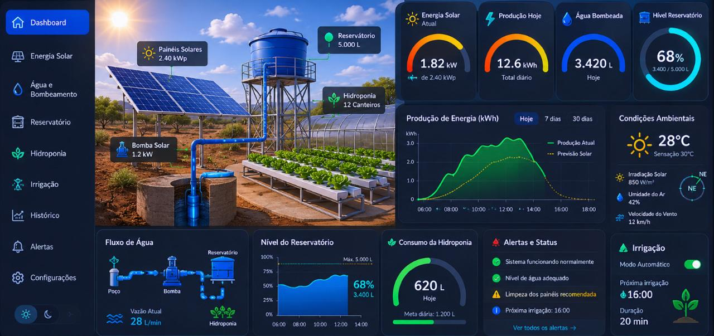

Painel de Monitoramento Agrícola
Acompanhe indicadores de umidade, risco climático e telemetria do sistema hidropônico com irrigação solar.
Umidade do Solo
30%
Risco Climático
Alto
Sistema Inteligente de Monitoramento Hidropônico e Irrigação Solar
